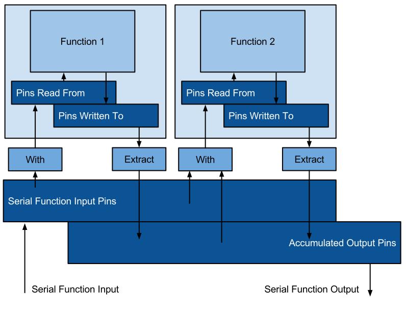

Functions of this type apply a list of functions in sequence. It can be used to compose functions into a more complex operation.
The resulting function has input values that are available for each sub-function. Each sub-function in the sequence has access to these input values and all the output values of the preceding sub-functions.
Error running %%config macro with params function serial
{"error":"function entry 'serial' does not exist or has been deleted","kind":"function","resource":"serial"}Type with name 'MLDB::SerialFunctionStepConfig' not found
The type field can take any of the following function types:
| Type | Description | Doc |
|---|---|---|
classifier | Apply a trained classifier to new data | [doc] |
classifier.explain | Explain the output of a classifier | [doc] |
embedding.neighbors | Return the nearest neighbors of a known row in an embedding dataset | [doc] |
feature_hasher | Feature hashing feature generator | [doc] |
fetcher | Fetches the contents of a URL each time it's invoked | [doc] |
http.useragent | Parse user agent strings into their components | [doc] |
image.proximatevoxels | Find values in a cubic volume inside a 3d embedding | [doc] |
image.readpixels | Wraps access to a 2d embedding | [doc] |
kmeans | Apply a k-means clustering to new data | [doc] |
mongodb.query | Takes a MongoDB query, forwards it to MongDB, parses the result and returns it as an MLDB result. | [doc] |
pooling | Apply a pooling function | [doc] |
probabilizer | Apply a probability calibration model | [doc] |
sql.expression | Run an SQL expression as a function | [doc] |
sql.query | Run a single row SQL query against a dataset | [doc] |
statsTable.bagOfWords.posneg | Get the pos/neg p(outcome) | [doc] |
statsTable.getCounts | Get stats table counts for a row of keys | [doc] |
stemmer | Apply a stemming algorithm column names | [doc] |
stemmerdoc | Apply a stemming algorithm on a single document | [doc] |
svd.embedRow | Apply a trained SVD to embed a row into a coordinate space | [doc] |
tensorflow.graph | Graph parameters for a trained TensorFlow model | [doc] |
tfidf | Apply a TF-IDF scoring to a bag of words | [doc] |
tokensplit | Insert spaces after tokens from a dictionary | [doc] |
The matching of the output values of a function to the input values of another function appearing later in the sequence is done through their names. This requires a mechanism to rename values or input values. This is done via SQL expressions.
Each sub-function is executed in its own context. The input
values of that context are defined via a with expression and the
output values are defined via a extract expression.
The following diagram shows this in detail:

The following points are important:
with and extract expressions are used to copy values between
the serial function and its sub-functions.with and extract expressions are normally of one of the forms
*: (only for extract; doesn't work for with): copy all input values
and output values without changing their names. This may work
for simple functions but can lead to name conflicts on more complex
functions.arg1[,...] or val1[,...]: copy only the given input values or output
values without changing their namesarg1 AS name1[,...] or val1 AS name1[,...]:
copy the input values or output values with a different nameexpr AS name[,...]: copy input values or output values transforming them
on their output.with expressions are used to copy input values or output values from the outer
context to a sub-function's context. For example, if the outer function outputs an integer
value named userid, and the sub-function requires a string input value named usernum,
then the with expression might be CAST (userid AS STRING) AS usernum.extract expressions are used to copy output values from the
sub-function to the output. For example, if the output value prob
is needed to be available as the user_conversion_percentage output value on
the output of the serial function, then the extract expression
might be prob * 100 AS user_conversion_percentage.The following example shows how two SQL expression functions can be connected together. Consider a serial function with the following configuration:
{
type: "serial",
id: "test",
params: {
steps: [
{
type: "sql.expression",
params: {
expression: "x + y AS z"
},
'with': "x, y",
extract: "z"
},
{
type: "sql.expression",
params: {
expression: "p + q AS z"
},
'with': "z AS p, z AS q",
extract: "z AS r"
}
]
}
};
In this function, the value named z is used inside the second sub-function,
but it is distinct from the value z returned by the first function, and is
renamed to r when extracted from the second function.
This serial function outputs all the values returned by the two functions, which
are z (from the first function) and r (from the second function).
The first sub-function calculates the value of \(z = x + y\), and the second the value of \(z = p + q\).
Let's assume we run it with \(x = 1\) and \(y = 2\). Then the value of the first expression is \(z = x + y = 1 + 2 = 3\)/
The second expression calculates a different z, which we will call
\(z'\), as \(z' = p + q\). Both \(p\) and \(q\) are set from
\(z\) from the output of the first function. Thus, the value of the
second sub-function is \(r = z' = p + q = z + z = 3 + 3 = 6\), and
the output of applying the function with \(x = 1\) and \(y = 2\)
is:
GET /v1/functions/<functionName>/applications?input={'x':1,'y':2}
{
"output" : {
"r" : 6,
"z" : 3
}
}